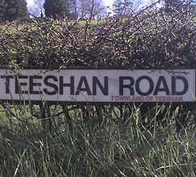

3 MapServer & SQL Server 2008 Performance Tips¶
- date:
2009-12-12 15:20
- author:
admin
- category:
mapserver, sql server 2008, web development, wms
- slug:
mapserver-sql-server-2008-tips
- status:
published
A current project I’ve been developing uses a combination of SQL Server 2008 and MapServer (for Windows) to serve many WMS layers. As much as it irks developers, web users only care about two things - how nice the site looks, and how fast it is. Whether the correct information is displayed comes a poor third..
{kind=link}
I’ve found a number of tweaks that have dramatically improved the WMS creation speed. In these examples I’m using a table in SQL Server 2008 with 50773 features (Irish Townlands if you’re asking).
To test speeds I use the program shp2img program, which can be found in the C:\ms4w\tools\mapserv folder. This is useful for not only checking if there are errors in your MAP file, but also for checking the speeds of individual layers. I use STATUS OFF for all layers, and then pass in the layer name with the following command (in the MS4W-Shell - a DOS window with environment variables set to various MapServer folders.
shp2img -all_debug 5 -m C:\ms4w\apps\sei\test.map -o -l "Townlands" test.png
Reproject Your Data in the Database¶
A nice feature of MapServer is that it can reproject your data on-the-fly. However this comes at a performance cost. The original data is projected in the Irish National Grid, but the web viewer is based around OpenLayers and background mapping from Google, which is projected in EPSG:3785 (or EPSG:900913 / EPSG:google - I prefer the vendor free projection myself).
The “web Mercator” projection can be added to MapServer by pasting the following lines into the C:\ms4w\proj\nad\epsg file.
## Google Projection
<900913> +proj=merc +a=6378137 +b=6378137 +lat_ts=0.0 +lon_0=0.0 +x_0=0.0 +y_0=0 +k=1.0 +units=m +nadgrids=@null +no_defs
## Google Projection - new code
<3785> +proj=merc +a=6378137 +b=6378137 +lat_ts=0.0 +lon_0=0.0 +x_0=0.0 +y_0=0 +k=1.0 +units=m +nadgrids=@null +no_defs
 FMEwas then used to
reproject the geometry in SQL Server. A nice feature of using the
database as opposed to shapefiles is that two or more geometry fields
can be stored in the same table, so different projections can be used
for different WMS services or applications. In my MAP file my layer
definition is now as follows:
FMEwas then used to
reproject the geometry in SQL Server. A nice feature of using the
database as opposed to shapefiles is that two or more geometry fields
can be stored in the same table, so different projections can be used
for different WMS services or applications. In my MAP file my layer
definition is now as follows:
CONNECTIONTYPE PLUGIN
PLUGIN "C:\ms4w\Apache\specialplugins\msplugin_mssql2008.dll"
CONNECTION "server=****;uid=****;pwd=****;database=****;Integrated Security=false"
DATA "GEOM3785 from Townland"
Reprojected time to create layer: 46.06 seconds
Unprojected time to create layer (all features): 13.469 seconds
Use Fast CGI¶
Fast CGI is a protocol for keeping cgi-bin style web applications running as a daemon to take advantage of preserving memory caches, and amortizing other high start-up costs (like heavy database connections) over many requests.
Fast CGI can be set up by following the instructions in C:\ms4w\README_INSTALL.html#f-fastcgi
I don’t think differences can be measure using shp2img, so I tested usingFireBug’s Net Tab. The following line was added in to the LAYER definition in the MAP file:
PROCESSING "CLOSE_CONNECTION=DEFER"
Without FastCGI: 9.23 seconds
With FastCGI: 8.46 seconds
How accurate these results are I’m not really sure. I guess that improvements in speed will become more noticeable when many layers are loaded in that all use the same database connection at the same time. However even on a single layer the FastCGI was almost a second quicker on every test run.
Use Spatial Indexes¶
Using a spatial index when querying all layers would have no effect, so to see what difference it made on speed I needed to limit the results to a selected area. I decided to select all Townlands which intersected the county of Carlow. This returns 1708 records. The following command was used to simulate this in shp2img:
shp2img -all_debug 5 -m C:\ms4w\apps\sei\wind.map -o -e -791171 6884314 -724041 6967856 -l "Townlands" test.png
To select data using a spatial index the following line is used in the MAP file:
DATA "GEOM3785 from Townland WITH(INDEX(Townland3785_sidx)) USING UNIQUE FID USING SRID=3785"
I initially believed that spatially indexes had to be specified explicitly in the MAP file, and to test speeds without an index you could just remove the (WITH(INDEX…) statement. However speeds remained very similar. Disabling the spatial index in SQL Server (an option when right clicking on the index) revealed very different speeds. To re-enable the index, simply rebuild it. I’d leave the (WITH(INDEX…) statement in just to make sure it is used.
Not using a spatial index: 3.806 seconds
Using a spatial index: 0.875 seconds
Any feedback, or more tips much appreciated! There is also an official page on optimisation here. Happy MapServing..
- orphan:
Comments¶
1. Alexandre **
Very useful post. Thanks for the info.
Reply2. Donald Kerr **
Excellent article. Solved my problem. Thanks.
Reply3. dgambin **
Was here several times….each visit solved my problems..thanks very much
Reply4. MatissV **
Does anyone have a url with an example of this solution working in practice?
Reply5. Donald Kerr **
Just noticed that Mapserver will not show “OtherSRS” in a GetCapabilities request unless “EPSG” in the following is UPPERCASE:
“wfs_srs” “EPSG:29902”
Reply6. Donald Kerr **
For Openlayers, you also need to define, as a minimum, the map projection in order for the reprojected Mapserver layer to work:
7. Luís **
Thank you very much for this post. I’d never guess that trick with the extra srsName bit on the URL.
ReplyAdd Comment